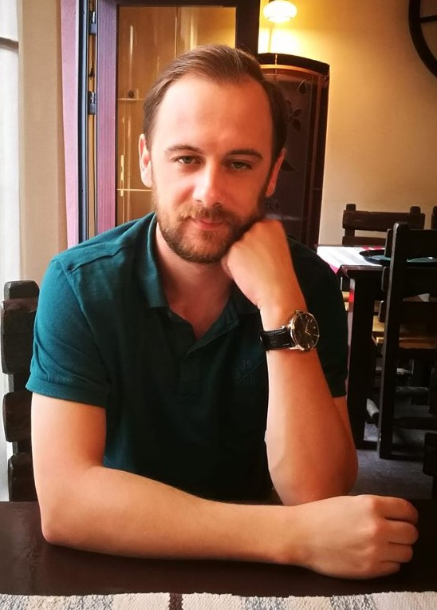

Tehnical support assistant la
LINKgroup
.
Curiac Marius
Contact me
Hobbies
Locuri unde am lucrat
Mar 2017 - prezent | 3 ani si 6 luni Technical support assistant Link Group, Timisoara Departamentul: IT Software | Industria: Educatie / Training
Nov 2015 - Mai 2017 | 1 an si 7 luni Technician calitate Nestle, Timisoara Departamentul: Administrativ / Logistica | Industria: Alimentara
Feb 2012 - Feb 2013 | 1 an si 1 luna cinematografie kino gric doo, STRAINATATE Departamentul: Vanzari | Industria: Arta / Entertainment
Educație
2020 - prezent Facultate: Informatică Politehnica Timisoara,
2007 - 2009 Facultate: turims uniiversitatea de vest, timisoara
2004 - 2007 Liceu / Școală profesională: matematica-informatica liceul biling Romano-Croat, carasova
Abilități
Html CSS
Microsoft Word
Adobe Photoshop - nivel mediu
Microsoft Excel
Instalare si configurare software
Instalare si configurare hardware
Instalare si configurare aparate retelistica
Instalare si configurare Windows
Google G Suite
Adobe Premiere
Adobe dreamweaver
Camtasia Studio
Audacity
Certificări
Comptia IT fundamentals
Pearsonv Vue administrator
ISCIR
Profil social media
Facebook
Tweeter
Limbi vorbite
Croată
Avansat
Sârbă
Avansat
Română
Nativ
Engleză
Mediu